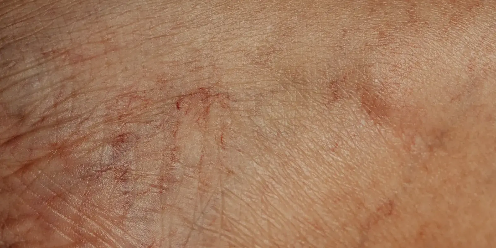

Várices vs. arañitas vasculares: ¿son lo mismo?
Te miras las piernas, ves unas rayitas rojas cerca de venas más gruesas y abultadas, y no sabes si es lo mismo. Te contamos la diferencia real, sin tecnicismos, para que sepas cuándo es solo estético y cuándo conviene pedir una valoración.

Si te miras las piernas y ves líneas finas y rojizas junto a venas más gruesas y abultadas, es normal que te preguntes si son la misma cosa. La respuesta corta es que várices y arañitas vasculares no son lo mismo, aunque las dos tienen que ver con cómo circula la sangre en tus venas y, muchas veces, aparecen juntas en la misma persona. Conocer la diferencia te ayuda a saber cuándo se trata solo de un tema estético y cuándo conviene pedir una valoración.
¿Qué son las várices?
Las várices, o venas varicosas, son venas dilatadas, retorcidas y abultadas que se ven como cordones o bultos bajo la piel, casi siempre en las piernas. Se forman cuando las válvulas que ayudan a que la sangre suba de vuelta hacia el corazón dejan de cerrar bien: la sangre se devuelve, se acumula y la vena se estira y se dilata con el tiempo. Su color suele ser azulado o morado, y pueden sentirse pesadas, doler, arder o picar, sobre todo después de pasar muchas horas de pie.
Si además notas hinchazón, pesadez o cambios en la piel alrededor de una várice, te sirve leer sobre los síntomas de la insuficiencia venosa crónica que no debes ignorar, porque las várices suelen ser una de sus señales más visibles.
¿Qué son las arañitas vasculares?
Las arañitas vasculares —también llamadas telangiectasias— son vasos mucho más pequeños y superficiales, de apenas fracciones de milímetro a unos pocos milímetros de ancho. Se ven como líneas finas rojas, moradas o azuladas que forman ramitas o telarañas justo bajo la piel. A diferencia de las várices, casi nunca se sienten como bultos y en general no duelen ni pesan: su impacto suele ser más estético que físico.
Puedes leer más sobre sus causas y qué se puede hacer en nuestro artículo sobre arañas vasculares en las piernas: causas y soluciones.
¿Son lo mismo várices y arañitas vasculares?
No. Aunque en el lenguaje cotidiano a veces se usan como sinónimos, várices y arañitas vasculares son dos hallazgos distintos:
- Tamaño: las arañitas son diminutas, de apenas unos milímetros; las várices son mucho más grandes y suelen abultarse bajo la piel.
- Profundidad: las arañitas están justo en la superficie de la piel; las várices se forman en venas algo más profundas, pero siguen dentro del mismo sistema venoso superficial (no se trata del sistema venoso profundo, que es una red distinta, más al interior de la pierna).
- Síntomas: las arañitas casi nunca duelen; las várices sí pueden causar pesadez, dolor, picazón o sensación de calor.
- Lo que pueden indicar: las arañitas rara vez señalan un problema de salud de fondo; las várices pueden ser una manifestación de insuficiencia venosa que conviene valorar.
¿Una se puede convertir en la otra?
Directamente, no: una arañita vascular no "crece" hasta volverse várice, porque son vasos de distinto tipo y calibre. Pero sí pueden compartir la misma causa de fondo. Cuando la presión dentro del sistema venoso aumenta, es común que aparezcan arañitas alrededor de una várice ya existente, o que las arañitas sean una señal temprana de que la circulación venosa empieza a fallar. Por eso, aunque no exista una transformación directa entre ellas, ver muchas arañitas nuevas —sobre todo si aparecen junto con venas más gruesas— es una buena razón para hacerte valorar.
Ni todas las venas visibles son iguales, ni todas necesitan lo mismo: lo primero es identificar bien qué estás viendo y por qué aparece.
¿Cuándo conviene consultar a un especialista?
Unas cuantas arañitas aisladas, sin otros síntomas, generalmente no son urgentes: puedes comentarlas en tu próximo control. Pero hay señales que sí ameritan una cita más pronto:
- Dolor, pesadez o hinchazón que no mejora al elevar las piernas.
- Cambios de color en la piel alrededor de una várice (oscurecimiento o enrojecimiento).
- Aparición rápida de muchas venas nuevas en poco tiempo.
- Una várice que sangra o que empieza a doler de forma repentina.
Este último punto es importante: no toda vena visible es benigna. Si notas hinchazón repentina, dolor intenso o cambios de color en una sola pierna, revisa también nuestra guía sobre trombosis venosa: síntomas y señales de alarma que no debes ignorar, porque ese cuadro requiere atención médica pronta y es distinto de una várice o una arañita vascular común.
¿Qué tratamientos existen?
El manejo depende de qué estés viendo y de tu caso particular, así que lo primero es una valoración con eco Doppler que permita entender cómo está funcionando tu circulación venosa. En términos generales:
- Para arañitas vasculares, suelen usarse escleroterapia o láser, dirigidos a cerrar el vaso pequeño de forma controlada.
- Para várices, el enfoque depende del tamaño y la causa: puede ir desde medidas de compresión y cambios de hábito hasta procedimientos guiados por imagen para tratar la vena afectada.
- En ambos casos, elevar las piernas, mantenerte en movimiento y evitar estar de pie o sentada por periodos muy largos puede ayudar a que la circulación no empeore.
En Seravena evaluamos tu salud vascular con eco Doppler para saber exactamente qué tipo de vena estás viendo y qué opciones tienes, sin promesas de resultados que no se puedan sostener.
Si no sabes si lo que ves en tus piernas es una arañita, una várice o algo que merece revisión pronto, no tienes que quedarte con la duda. Agenda una valoración y resolvemos juntas qué está pasando y qué opciones tienes.
Preguntas frecuentes
¿Las arañitas vasculares se pueden convertir en várices?
No directamente: son vasos de distinto tamaño y profundidad. Pero pueden compartir la misma causa de fondo, así que ver muchas arañitas nuevas junto con venas más gruesas es una buena razón para hacerte valorar.
¿Las arañitas vasculares son peligrosas?
En la mayoría de los casos no indican un problema de salud de fondo y su impacto es principalmente estético. Aun así, si aparecen de forma repentina o junto con dolor e hinchazón, conviene consultar.
¿Cómo sé si lo que tengo en la pierna es una várice o una arañita vascular?
Las arañitas son líneas finas, rojizas o azuladas, del grosor de un cabello, que no suelen doler. Las várices son venas más grandes, abultadas, de color azulado o morado, que pueden causar pesadez o dolor. Ante la duda, una valoración con eco Doppler lo aclara.